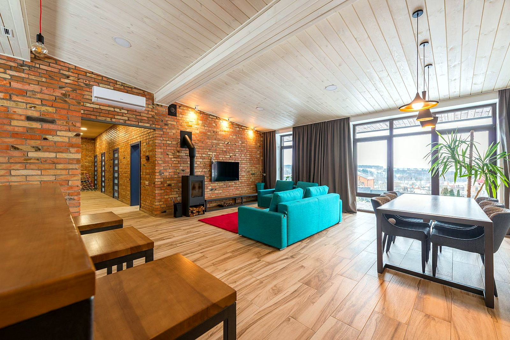
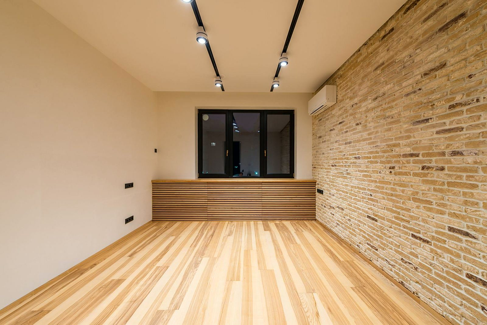
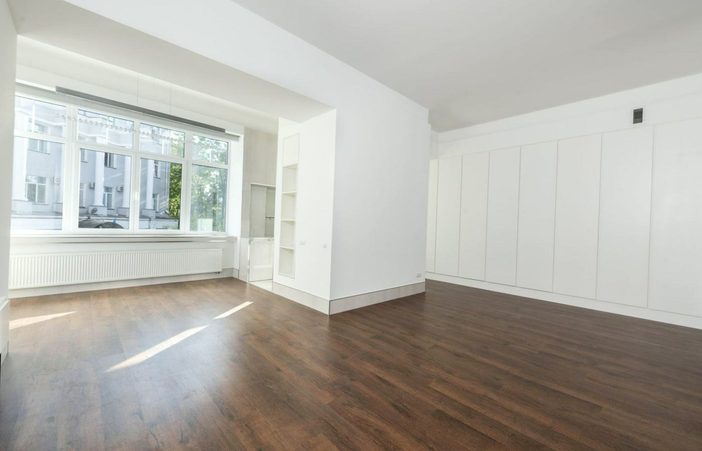
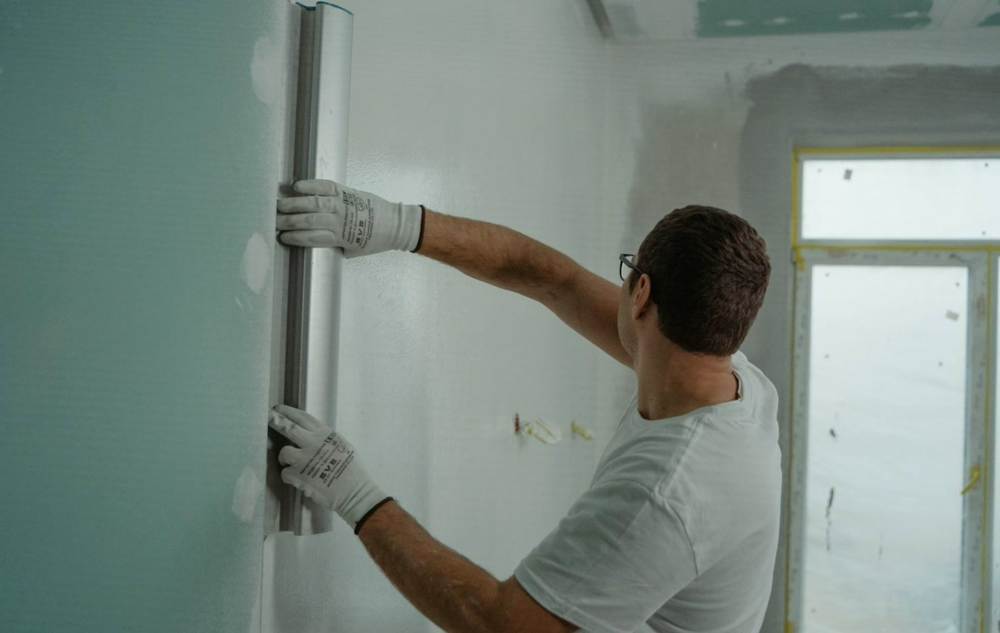
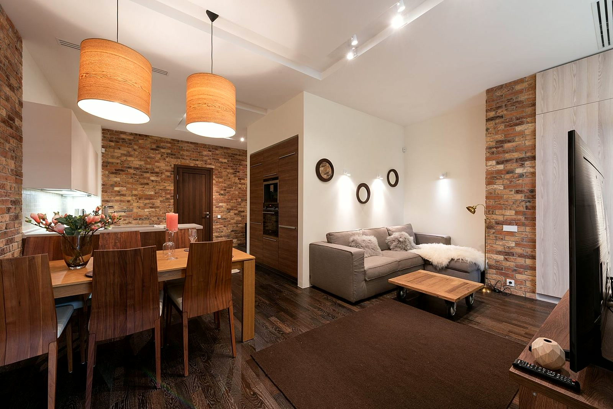
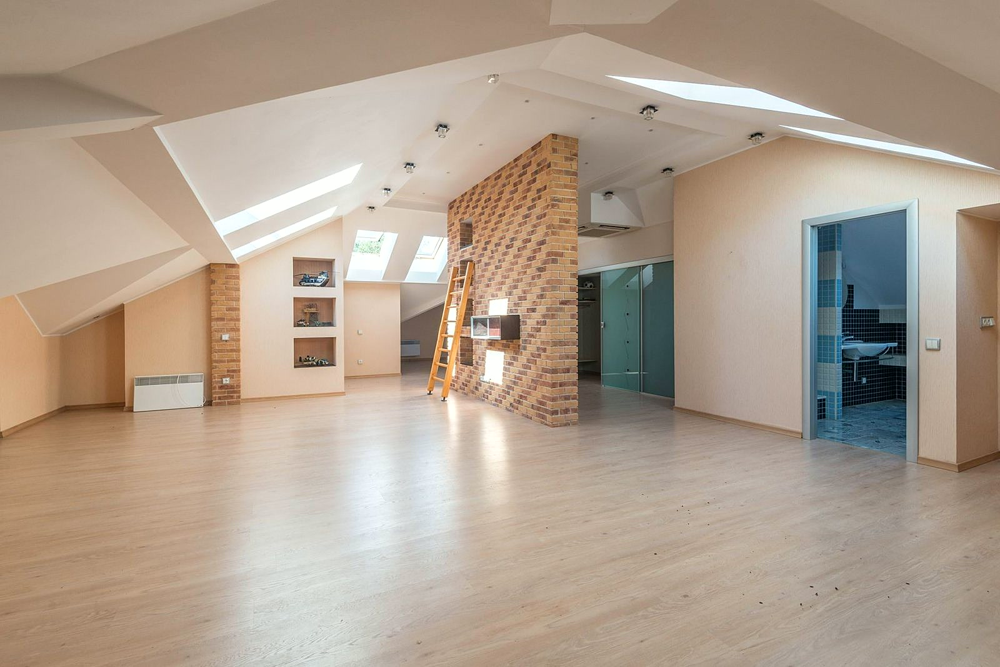
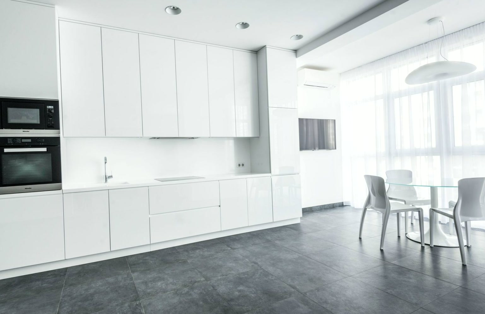

Zakres robót

Mieszkania pod klucz
Mieszkanie w stanie deweloperskim albo dom do odświeżenia - prowadzę wykończenie od gołych ścian po malowanie i listwy. Układam kolejność prac tak, żeby nic nie czekało na poprzedni etap. Ty masz jeden numer telefonu do wszystkiego.

Remonty dla wspólnot i budynków
Klatki schodowe, korytarze, sale i pomieszczenia wspólne. W takim budynku ludzie dalej mieszkają albo pracują, więc dzielę remont na odcinki, zabezpieczam przejścia i zostawiam czysto po każdej zmianie. Zakres i termin ustalamy na piśmie z zarządcą.

Remonty i modernizacje
Stary dom po rodzicach albo mieszkanie z rynku wtórnego? Zanim podam cenę, sprawdzam, co naprawdę siedzi w ścianach i stropach - wilgoć, stare instalacje, krzywe podłogi. Mówię też, co spokojnie można zostawić, bo remontu nie robi się dla samego remontu.

Wykończenia wnętrz
Tynki, gładzie, malowanie, podłogi i zabudowy z płyt g-k. Gładzie szlifuję przy lampie, bo dopiero ostre światło pokazuje każdą falę na ścianie. Na wykończenie patrzysz potem codziennie - dlatego oddaję je dopiero wtedy, kiedy sam bym się wprowadził.

Elewacje i docieplenia
Stara elewacja pęka, łapie wilgoć albo zieleni się od północy? Najpierw sprawdzam, co siedzi pod spodem, zamiast kleić nową warstwę na słabą. Kolor i fakturę tynku wybierasz z próbek przyłożonych do domu, w dziennym świetle - na wzorniku w sklepie każdy wygląda inaczej.

Prace murarskie i tynkarskie
Tynki kładę maszynowo tam, gdzie liczy się tempo, i ręcznie tam, gdzie agregat nie wjedzie. Okna i parapety osłaniam przed robotą, a wilgotność ścian sprawdzam miernikiem, zanim oddam etap. Dostajesz ściany równe i gotowe pod gładź albo malowanie.
Która z usług Cię interesuje?
Napisz, co chcesz zrobić - odpowiemy z propozycją i wyceną.